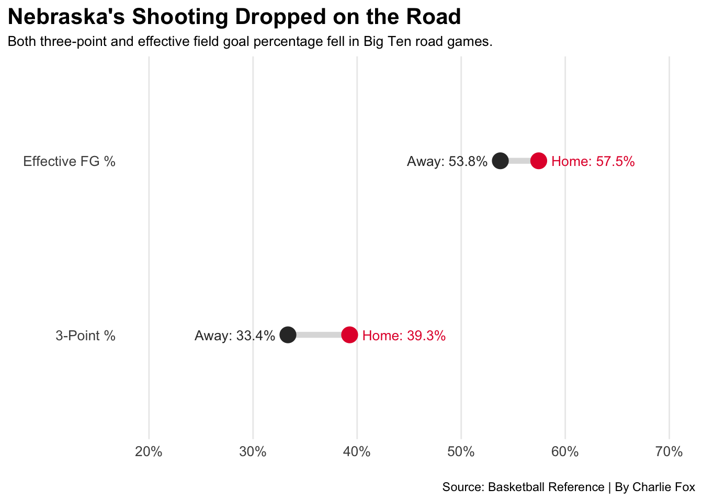
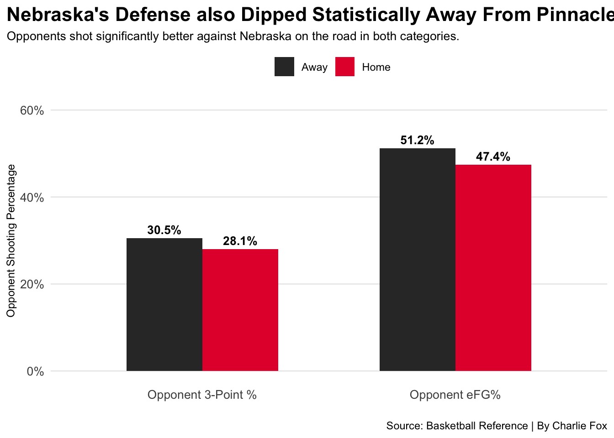
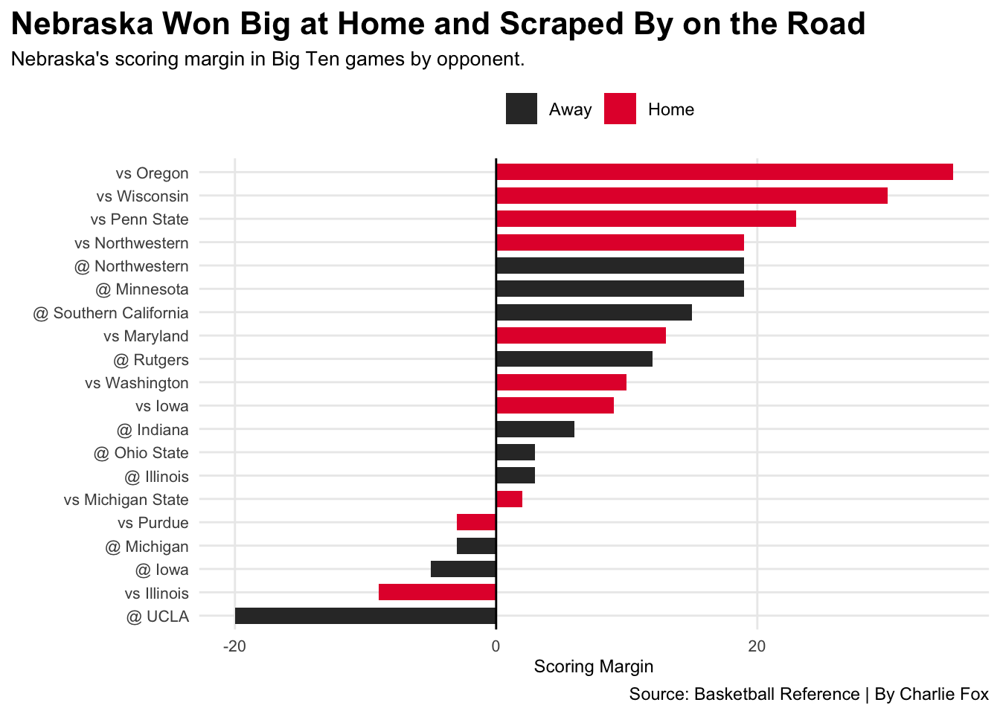

Code
library(tidyverse)
library(ggalt)
library(ggrepel)Charlie Fox
April 10, 2026
Nebraska men’s basketball went 28-7 in the 2025-26 season, won their first NCAA Tournament game and made it to the Sweet Sixteen. It was a historic and unforgettable year. But if you tuned in each night, you could feel there was a real difference made in each game played at Pinnacle Bank Arena. What I found and what may or may not surprise you, is that Nebraska underperformed on both sides of the ball on the road compared to the standards they showed at home.
While it might sound like criticism against the most success the program has had, I want to shape the angle of it as the next step for the program to take and improve on. I found Nebraska’s game logs from the 2025-26 season on Basketball Reference and split them by location.
At first, my research was covering the entirety of the season until I came across the fact that the stats including and not including non-conference play significantly altered the results.
Nebraska shot .393 from three at home but just .334 on the road in conference play. Their effective field goal percentage dropped from .574 to .538 as well on the road. The Huskers were a noticeably better offensive team at Pinnacle Bank Arena than they were anywhere else.
When you look at Nebraska’s shooting in Big Ten games, the drop on the road is clear to see when visualized.
offense_split <- husker_conf |>
group_by(location) |>
summarise(
`3-Point %` = mean(team_3p_pct, na.rm = TRUE),
`Effective FG %` = mean(team_efg_pct, na.rm = TRUE)
)
offense_wide <- offense_split |>
pivot_longer(cols = c(`3-Point %`, `Effective FG %`), names_to = "metric", values_to = "pct") |>
pivot_wider(names_from = location, values_from = pct)
ggplot(offense_wide) +
geom_dumbbell(
aes(y = reorder(metric, Away), x = Away, xend = Home),
size = 2, color = "#DDDDDD", colour_x = "#333333", colour_xend = "#E41C38",
size_x = 5, size_xend = 5
) +
geom_text(aes(y = metric, x = Away, label = paste0("Away: ", round(Away * 100, 1), "%")), hjust = 1.15, size = 3.5, color = "#333333") +
geom_text(aes(y = metric, x = Home, label = paste0("Home: ", round(Home * 100, 1), "%")), hjust = -0.15, size = 3.5, color = "#E41C38") +
scale_x_continuous(labels = scales::percent_format(), limits = c(0.20, 0.70)) +
labs(
title = "Nebraska's Shooting Dropped on the Road",
subtitle = "Both three-point and effective field goal percentage fell in Big Ten road games.",
x = "",
y = "",
caption = "Source: Basketball Reference | By Charlie Fox"
) +
theme_minimal() +
theme(
plot.title = element_text(size = 16, face = "bold"),
plot.title.position = "plot",
plot.subtitle = element_text(size = 10),
axis.title = element_text(size = 9),
axis.text = element_text(size = 10),
panel.grid.minor = element_blank(),
panel.grid.major.y = element_blank(),
legend.position = "none"
)
The drop in three-point shooting is especially notable, nearly six percent worse on the road. The effective FG% dipped noticeably as well. The offense is only half the story for the Huskers here.
The other end of the floor was just as bad, if not worse. Opponents shot a .444 eFG% against Nebraska at Pinnacle Bank Arena. Away from home, that number jumped to a .521. Their three-point defense was still strong, but its difference in home versus away also supports the pattern.
defense_split <- husker_conf |>
group_by(location) |>
summarise(
`Opponent eFG%` = mean(opp_efg_pct, na.rm = TRUE),
`Opponent 3-Point %` = mean(opp_3p_pct, na.rm = TRUE)
) |>
pivot_longer(cols = c(`Opponent eFG%`, `Opponent 3-Point %`), names_to = "metric", values_to = "percentage")
ggplot(defense_split, aes(x = metric, y = percentage, fill = location)) +
geom_bar(stat = "identity", position = "dodge", width = 0.6) +
geom_text(
aes(label = paste0(round(percentage * 100, 1), "%")),
position = position_dodge(width = 0.6),
vjust = -0.5, size = 3.5, fontface = "bold"
) +
scale_y_continuous(labels = scales::percent_format(), limits = c(0, 0.60)) +
scale_fill_manual(values = c("Home" = "#E41C38", "Away" = "#333333")) +
labs(
title = "Nebraska's Defense also Dipped Statistically Away From Pinnacle Bank Arena",
subtitle = "Opponents shot significantly better against Nebraska on the road in both categories.",
x = "",
y = "Opponent Shooting Percentage",
fill = "",
caption = "Source: Basketball Reference | By Charlie Fox"
) +
theme_minimal() +
theme(
plot.title = element_text(size = 16, face = "bold"),
plot.title.position = "plot",
plot.subtitle = element_text(size = 10),
axis.title = element_text(size = 9),
axis.text = element_text(size = 10),
panel.grid.minor = element_blank(),
panel.grid.major.x = element_blank(),
legend.position = "top"
)
On both sides of the ball, the numbers tell the same story. Nebraska was a different team away from Pinnacle Bank Arena. The offense shot worse and the defense let opponents get more comfortable looks than they would have gotten at home. If they were able to replicate their home-turf performance while on the road, they certainly could have finished with more than the already impressive 7 away Big Ten victories.
The averages paint the picture, but looking at each individual game shows just how different the margins were.
husker_conf <- husker_conf |>
mutate(
margin = team_pts - opp_pts
)
ggplot(husker_conf, aes(x = reorder(paste0(ifelse(location == "Away", "@ ", "vs "), Opp...5), margin), y = margin, fill = location)) +
geom_bar(stat = "identity", width = 0.7) +
geom_hline(yintercept = 0, color = "black", linewidth = 0.5) +
scale_fill_manual(values = c("Home" = "#E41C38", "Away" = "#333333")) +
coord_flip() +
labs(
title = "Nebraska Won Big at Home and Scraped By on the Road",
subtitle = "Nebraska's scoring margin in Big Ten games by opponent.",
x = "",
y = "Scoring Margin",
fill = "",
caption = "Source: Basketball Reference | By Charlie Fox"
) +
theme_minimal() +
theme(
plot.title = element_text(size = 16, face = "bold"),
plot.title.position = "plot",
plot.subtitle = element_text(size = 10),
axis.title = element_text(size = 9),
axis.text = element_text(size = 8),
panel.background = element_blank(),
panel.grid.minor = element_blank(),
legend.position = "top"
)
The contrast is clear, and when you dive into the numbers you can see the change in the Huskers’ play. In home conference play, Nebraska had a scoring margin of +12.9, consistently beating teams by double digits. Meanwhile, the scoring margin drops to only a +4.9 on the road; a nearly eight point difference that shows how much more comfortable Nebraska played at home.
For a program that is hoping to continue its momentum following their first March Madness victory, the next step is figuring out how to bring the consistency on both sides of the floor, on the road and at home. The home-court advantage is an invaluable asset for the team, but great teams win away from home too. If Nebraska is able to close that gap, they will not just be a Sweet Sixteen team, but they will be a national title contender.